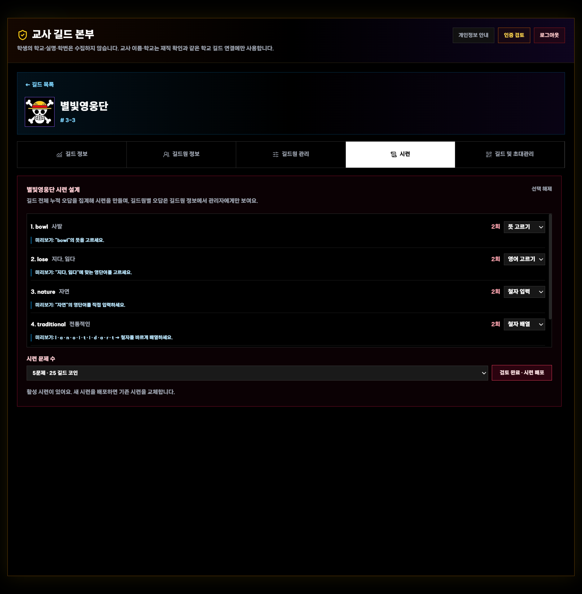
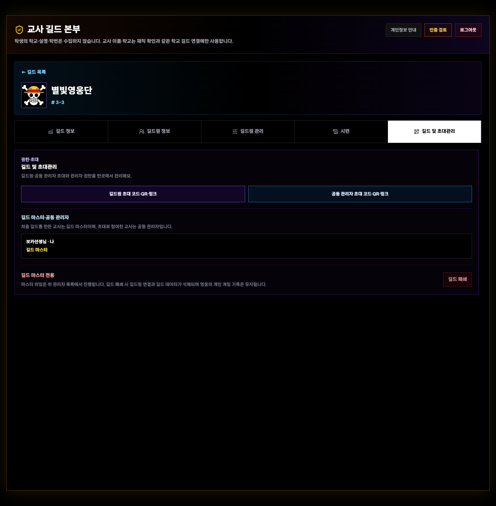

VOCA HERO!
교사용
길드 운영 매뉴얼
개별 학습 배정부터 참여 분석, 오답 시련과 협동 학습까지

실제 배포 화면 확인본 · 2026-08-12 · english-game-sage.vercel.app
1시작하기
VOCA HERO!란?
영어 단어 퀴즈를 캐릭터 성장·수집·강화·길드 협동·월드보스에 연결한 웹 기반 학습 게임입니다. 교사는 학생별로 누적 단어팩 하나와 여러 문제 유형을 배정하고 참여·정답·오답 데이터를 확인해 오답 기반 시련을 배포합니다.
교사 등록Google 로그인
재직 확인
길드 생성수준 설정
학생 초대
맞춤 배정단어팩
문제 유형
분석·시련참여·오답
재도전

그림 1. 실제 길드 분석 화면. 학교·길드·학생 이름은 자료용 예시 이름으로 익명화했습니다.
교사 등록
- 첫 화면에서 교사 로그인을 선택합니다.
- Google로 교사 로그인 후 학교를 검색합니다.
- 교사 이름과 최근 1개월 이내 재직증명서를 제출합니다.
- 자동 확인과 최종 검토가 끝나면 학교 길드 기능을 사용합니다.
문서 제출 전 주민등록번호·주소·전화번호 등 불필요한 개인정보를 가려 주세요.
2학생별 학습 설정
길드 목록 → 길드 카드 → 길드원 관리

그림 2. 개인·그룹·전체 길드원에게 단어팩과 문제 유형을 배정합니다.
설정 순서
- 학생을 직접 선택하거나 지원 필요·성장 중·안정 그룹을 선택합니다.
- 초등 3학년~고등 3학년 누적 단어팩 하나와 문제 유형 여러 개를 선택합니다.
- 선택한 길드원에게 적용 또는 전체 길드원·향후 가입자에 적용을 누릅니다.
뜻 찾기빈칸 넣기영어 단어 찾기발음 듣고 뜻 찾기철자 순서 맞추기영어 단답식
누적팩: 뜻 찾기는 기본 유형이며 단어팩은 하나만 선택합니다. 2022 개정 영어과 기본 어휘 3,000개 기반의 표제어 3,001개가 초3~고3 하⊂중⊂상으로 누적됩니다.
적응형 경로: 문항 보충 모드는 선택팩 누적 풀이가 8회 이상이면서 정답률 75% 미만이거나, 미해결이 3개 이상이거나, 미해결 누적 오답 합계가 4회 이상이면 켜집니다. 후보가 모두 있을 때 미해결/직전/현재 단계의 기본 목표는 보충 55/30/15%, 평소 20/20/60%이며, 선택 그룹에 직전 문항과 다른 후보가 없으면 가능한 다음 그룹으로 재배분합니다. 이전 학년은 교사가 직접 지정합니다.
그룹 기준
| 그룹 | 기준 |
|---|
| 지원 필요 | 미시작, 7일 이상 미접속 또는 10회 이상 학습·정답률 40% 미만 |
| 안정 | 최근 7일 참여, 10회 이상 학습·정답률 70% 이상 |
| 성장 중 | 두 기준 사이 |
3학습 데이터 읽기
길드 정보 · 길드원 정보
길드 전체 분석
길드 정보
- 오늘·최근 7일 참여
- 전체 정답률과 성취 분포
- 최근 14일 학습량
- 유형별 풀이·정답률
- 반복 오답 단어
- 수업 설계 제안
길드원 정보
- 최근 학습일·스테이지
- 길드 기여와 정답률
- 최근 30일 학습 추이
- 배정 누적팩·출처와 실제 일반·문항 보충 경로·진입 근거
- 문제 유형별 성취
- 단어별 맞음·틀림 기록
- 시련 응시 기록
확인 순서
- 참여: 최근 학습 여부
- 정확도: 유형별 차이
- 단어: 반복 오답
- 조치: 설정 조정 또는 시련 배포
숙련 단어는 정답 10회 이상이면서 누적 정답률 80% 이상인 단어입니다. 지원 그룹과 문항 보충 경로는 별도 판정입니다. PC 길드 상세에서는 상단을 접어 리포트 공간을 넓힐 수 있고 모바일·터치 화면은 항상 펼칩니다.
4오답 시련 운영
길드 카드 → 시련

그림 4. 길드 누적 오답을 검토하고 문제 유형을 단어별로 조정합니다.
- 뜻이 등록된 길드 전체 누적 오답을 확인합니다.
- 5·10·15·20문제 중 문제 수를 선택합니다.
- 자동 배정된 유형을 검토하고 필요하면 변경합니다.
- 검토 완료 · 시련 배포를 누릅니다.
| 항목 | 내용 |
|---|
| 문제 유형 | 뜻 고르기, 영어 고르기, 철자 입력, 철자 배열 |
| 도전 | 전체 문제 최대 3회, 모두 맞히면 극복 |
| 힌트 | 객관식 오답 2개 제거 / 입력형 첫 글자·영문 글자 수 |
| 보상 | 문제당 5 길드 코인 |
첫 시련은 5문제로 짧게 시작하고 객관식과 입력형을 섞어 검토하는 것을 권장합니다.
5길드 초대와 권한
길드 카드 → 길드 및 초대관리

그림 5. 길드원·공동 관리자 초대와 관리자 권한을 한곳에서 관리합니다.
학생 초대
- 길드원 초대 코드·QR·링크 열기
- 6자리 영문·숫자 코드 전달
- 학생은 닉네임 계정으로 참여
공동 관리자
- 같은 학교의 인증 교사만 참여
- 별도의 6자리 코드·QR·링크
- 마스터 위임·관리자 내보내기
초대 코드가 외부에 노출되면 새 코드로 갱신합니다. 길드 폐쇄 시 학생의 개인 학습·게임 기록은 유지됩니다.
권장 환경
- 최신 Chrome·Edge
- 교사 관리는 PC·태블릿 권장
- 휴대전화 가로 화면은 전체 웹 레이아웃을 확대해 확인
6첫 수업과 운영 점검

학생 화면: 퀴즈 → 보상 → 성장 → 협동
첫 수업 권장안
- 수업 전: 교사 등록·길드 생성·기본 단어팩
- 첫 5분: 학생 계정 생성·길드 가입
- 10~20분: 퀴즈 전투·성장 탐색
- 수업 후: 참여·정답률·지원 학생 확인
- 다음 차시: 누적 오답 5문제 시련
처음에는 짧게
퀴즈 전투 → 보상 → 성장 → 길드 확인 흐름만 안내합니다.
학생 개인정보
| 처리 | 새 계정에서 수집하지 않음 |
|---|
| 인증 UID, 닉네임, 학습 학년, 게임·학습 기록과 설정 | 실명, 학교명, 반·번호, 주소, 전화번호 |
빠른 문제 해결
설정이 바로 보이지 않음학생 화면 새로고침 또는 앱 재실행 후 저장 완료와 선택 학생을 확인합니다.
초대 코드 오류영문·숫자 6자리와 코드 갱신 여부를 확인합니다.
시련 생성 불가뜻이 등록된 누적 오답이 최소 5개인지 확인합니다.
모바일 화면이 작음가로 모드에서 확대하거나 PC·태블릿을 사용합니다.